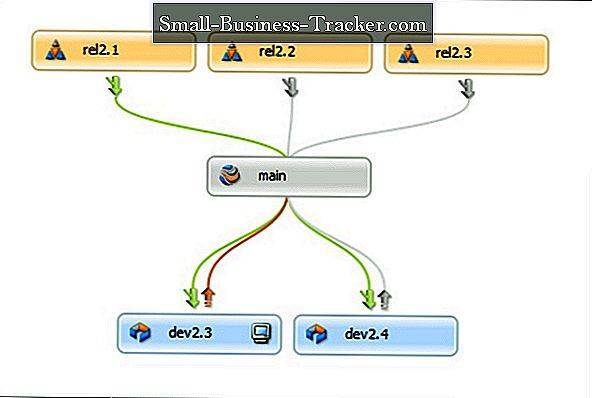
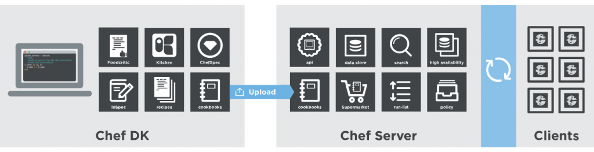

Homepage
Change
INFRASTRUCTURE AS A SERVICE
DEVOPS
Launching
What is?
Is DevOps a culture? No, DevOps is not a culture per se, but it does require a strong cultural
and organizational change for its implementation. A cultural shift toward collaboration,
communication, and ultimately full integration between the old
(usually rabidly stagnant) areas of development and systems.
This culture
change is so difficult to achieve in some organizations that many people directly
identify it with DevOps, but let's remember: DevOps is a software development methodology,
and a culture change is not in itself a way of developing software.
Change Management
Throughout the different blog posts, we have been seeing the different steps and strategies that we can follow to implement a DevOps approach in our organization. It must be borne in mind that the necessary change within the organization to be able to implement DevOps is quite important and in no case, easy.
In addition to the technical difficulty involved in the change to DevOps, you have to take into account the cultural changes and mentality when it comes to people. A change of this magnitude will undoubtedly meet with strong resistance to change.
Resistance to change has always been associated as a negative, but it really doesn't have to be that way. In fact, resistance to change is the symptom that change is taking place. If this resistance did not exist, that would really mean that no effective change is taking place. What we have to learn is to know how to manage it.
One of the reasons that change is difficult and people resist it is because they force us out of our comfort zone and necessarily put us in a situation where we go from being experts at something to newbies. It has happened to all of us when a change has been introduced in our lives or in our work and it is something normal
Version Approvals

---------
Release Automation
2 best DevOps automation tools
